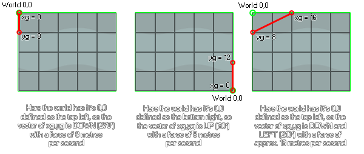

physics_world_gravity(xg, yg)
| Streit | Beschreibung |
|---|---|
| xg | Die x-Komponente des Schwerkraftvektors |
| yg | Die y-Komponente des Schwerkraftvektors |
Rückkehr: N / A
Wie bei allen Physikfunktionen, physics_world_gravity Funktioniert nur an einer Instanz, wenn der Raum eine Physikwelt im Raumeditor definiert hat oder verwendet physics_world_create. Es wird dann den 0,0 definierenden Punkt der physikalischen Welt verwenden, um die Richtung und Stärke der Schwerkraft basierend auf dem Vektor zu berechnen, der aus den Eingaben xg und yg berechnet wird. Hier sind einige Bilder zur Veranschaulichung...

Wie Sie sehen können, sind die Koordinaten xg, yg relativ zur Position von 0,0, wie sie für die Physikwelt definiert ist, und die Gravitation selbst wird als ein Vektor dieser beiden Komponenten berechnet. Mit den Standardwerten von 0,10 erhalten Sie also eine Richtung nach unten (270 Grad) mit einer Beschleunigung von 10 Metern pro Quadratsekunde. Beachten Sie die Meter pro Sekunde im Quadrat! Wie bei allen Physikfunktionen wird die Gravitation mit Metern als Basismaß berechnet, so dass die von Ihnen eingestellte Pixel-zu-Meter-Skala verwendet wird physics_world_create Funktion ist hier wichtig. Gravitation ist auch kumulativ auf das Objekt (aber die genaue Menge hängt davon ab, was Sie für die Funktion eingestellt haben physics_fixture_set_linear_damping ), was bedeutet, dass in einem Raum mit einer room_speed von 60, ohne Dämpfung, die Instanz um 10 Meter pro Sekunde, jede Sekunde beschleunigt wird - was, wenn Sie eine 0,1 Pixel zu Meter Skala haben, dasselbe ist, wie zu beschleunigen eine Geschwindigkeit von 100 Pixeln pro Sekunde in 60 Schritten.
physics_world_gravity(-5, 0)
Der obige Code setzt die Gravitation (vorausgesetzt, die Raumphysik 0,0 ist oben links eingestellt) nach rechts - 0 Grad - mit einer Beschleunigung von 5 Metern pro Sekunde im Quadrat.